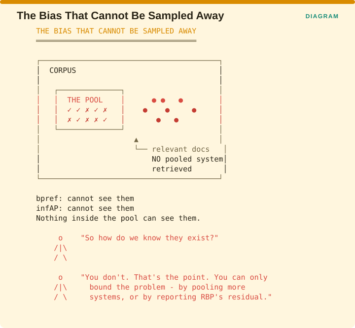

Measuring Retrieval › Chapter 6 - When You Do Not Know What Is Relevant
Chapter 6 - When You Do Not Know What Is Relevant
6.0 The problem Chapter 5 kept deferring
MAP needs R, the total number of relevant documents. nDCG needs the ideal ranking, which requires the same information. Both of them therefore require you to know every relevant document in the collection, and for a collection of any real size nobody knows that.
The standard workaround is called pooling. You run several different systems over the same set of queries, take the top d results from each of them, combine those into one pool, and pay humans to judge only the documents in that pool. Everything outside the pool is then treated as irrelevant.

The figure puts numbers on the assumption. Three systems each contribute their top 100 results, producing a pool of perhaps 4,000 documents that people actually read. The collection holds ten million documents, so 9,996,000 of them are being assumed irrelevant without anybody having looked.
That assumption is usually fine, because the overwhelming majority of documents in a large collection really are irrelevant to any given query. The problem is the relevant documents that none of the pooled systems retrieved, because those are invisible to the evaluation and they are not randomly distributed.
The resulting bias is systematic. A new system that finds relevant documents no pooled system found receives no credit for them, since they were never judged and are therefore counted as irrelevant. Pooling structurally favours systems that resemble the ones that built the pool. Zobel raised this in 1998 and it has never gone away.
6.1 bpref
One-line: Rank documents by how many judged irrelevant documents outrank each judged relevant one - ignoring unjudged documents entirely.
Formula:

Facets: Correctness | query | ref | R | ESTABLISHED VERIFIED Source: Buckley & Voorhees, Retrieval Evaluation with Incomplete Information, SIGIR 2004, pp. 25-32
The problem it solves
When MAP encounters a document nobody judged, it counts that document as irrelevant, which means your system is penalized for retrieving something an assessor simply never got to. That penalty falls hardest on exactly the systems you most want to evaluate, namely new ones that retrieve material the old pool never contained. What you want is a metric that declines to guess.
The idea
The insight is almost embarrassingly simple. If you do not know whether a document is relevant, do not pretend it is irrelevant. Skip it.
Reading the formula, r is a judged-relevant document, n counts the judged-irrelevant documents ranked above it, R is the number of judged relevant documents, and the count of n is capped at the first R irrelevant documents so that a very long tail cannot dominate. The question the metric asks, in plain terms, is how often a document known to be bad outranked a document known to be good. Unjudged documents take no part in the calculation at all.

The figure runs one ranking through both metrics. Six documents come back: rank 1 is judged relevant, rank 2 is unjudged, rank 3 is judged irrelevant, rank 4 is judged relevant, rank 5 is unjudged, and rank 6 is judged relevant. MAP fills in the gaps by assuming ranks 2 and 5 are irrelevant, so the system is penalized for both. bpref skips them, so they affect nothing.
The unjudged document at rank 2 might well have been relevant. bpref refuses to guess, and MAP guesses “irrelevant” every single time.
Advantages
- Robust to incomplete judgments, which is its entire purpose, and it delivers on it. As judgments are thinned, the system rankings bpref produces degrade far more gracefully than MAP’s do.
- No assumption about unjudged documents.
- Widely available, since it ships in
trec_evaland the standard tooling. - Good for evaluating novel systems against old pools, which is the case where a new system retrieves material nobody ever labelled.
Disadvantages
- Still needs R, the count of judged-relevant documents, so a biased pool remains a source of error even here.
- Less top-heavy than nDCG or RBP. bpref weights all relevant documents roughly equally, so it under-rewards a system that puts the single best result first.
- Harder to interpret. “One minus the fraction of irrelevant documents ranked above this one” is not a quantity anyone has an intuition for.
- Correlates imperfectly with what users experience, which follows directly from that flat weighting.
Domain examples
Evaluating a new retriever against an old test collection. The canonical use. If your new dense retriever surfaces documents that the BM25-era pool never contained, MAP will punish you for finding them and bpref will not.
RAG with gold-chunk-only labels. Extremely relevant here and almost never used. If you labelled one gold chunk per question and nothing else, then every other chunk your system retrieves is unjudged, and MAP, nDCG and precision are all quietly treating those chunks as irrelevant. bpref is the honest choice in that setting.
Consumer search with click-derived labels. Clicks give you sparse positive evidence and almost no trustworthy negative evidence, and bpref’s asymmetry fits that shape of data.
Recommendation
Use bpref whenever your judgments came from a pool you did not build yourself, or from labels covering only a small fraction of what your system retrieves, and report it alongside MAP rather than instead of it.
The gap between MAP and bpref on the same runs is a direct estimate of how much your incomplete judgments are distorting your evaluation. That comparison is cheap, since both numbers come out of the same tooling in a single command, and it is one of the highest-value diagnostics in this volume.
6.2 infAP
One-line: Average precision estimated statistically from a random sample of judgments, with confidence properties.
Facets: Correctness | query | ref | R | ESTABLISHED VERIFIED Source: Yilmaz & Aslam, Estimating Average Precision with Incomplete and Imperfect Judgments, CIKM 2006, Arlington VA, pp. 102-111. Extended: Estimating average precision when judgments are incomplete, Knowledge and Information Systems 16(2):173-211, 2008
The problem it solves
bpref solves the incomplete-judgment problem by changing what is being measured, which means its numbers are no longer comparable with the AP numbers everyone else reports. If you are building a judgment set yourself and can control how documents are chosen for judging, there is a second route: keep AP exactly as it is and estimate its true value from a sample.
The idea
Where bpref changes the definition of the metric to cope with missing judgments, infAP keeps AP’s definition and changes how you arrive at the number. If the documents you judged are a random sample of the pool, then standard statistics apply, and AP can be estimated with known properties including a confidence interval. The result is an unbiased estimate of the AP you would have measured if you had judged everything.

The figure states the two strategies side by side. bpref says to change the metric so that missing judgments stop mattering, and skips the unknowns. infAP says to keep the metric, sample properly, and estimate the true value with a confidence interval attached.
Which one is better depends entirely on whether you controlled the sampling, and that is usually decided for you. If you are evaluating on somebody else’s collection, you did not choose how the documents were selected for judging, so use bpref. If you are building your own judgment set from scratch, sample randomly and use infAP.
Advantages
- Statistically principled. This is an estimator with known properties rather than a heuristic that happens to behave well.
- Comparable to AP, because it estimates the same quantity, so nothing has to be reinterpreted when you report it.
- Efficient use of the annotation budget. You can decide in advance how many judgments to buy and know what precision that buys you.
Disadvantages
- Requires random sampling of the judgment pool. If your labels came from clicks, from an inherited pool, or from whatever the annotators managed to get through, the assumption behind the estimator is violated and the confidence properties do not hold.
- More complex to implement than bpref.
- Still an estimate, so it carries variance that has to be reported for the number to mean anything.
- Does not fix pool bias. If relevant documents exist that no system retrieved, no amount of sampling inside the pool will ever find them.
Recommendation
If you are building an evaluation set, sample randomly and report infAP with confidence intervals. If you inherited one, use bpref, because infAP’s estimator properties depend on a random judgment set that you do not have.
6.3 Pool bias and assessor agreement
Two evaluation controls sit underneath everything above and decide whether the metrics mean anything at all.
6.3.1 Pooling depth bias
Source: Zobel, How Reliable Are the Results of Large-Scale Information Retrieval Experiments?, SIGIR 1998, pp. 307-314 VERIFIED. See also Webber, Moffat & Zobel, The Effect of Pooling and Evaluation Depth on Metric Stability, EVIA 2010, pp. 7-15 VERIFIED.

The figure draws the collection as a large box with the pool as a small box inside it. Inside the pool, documents carry judgments. Outside the pool, scattered through the rest of the collection, sit relevant documents that no pooled system ever retrieved.
bpref cannot see them. infAP cannot see them. Nothing that operates inside the pool can see them, because they were never candidates for judgment in the first place.
Asked how you know they exist, the honest answer is that you do not, and that is exactly the point. You can only bound the problem, either by pooling more systems so that the pool becomes harder to miss things from, or by reporting RBP’s residual so that the uncertainty appears on the face of the number.
6.3.2 Assessor agreement
Human relevance judgments disagree with each other, and the disagreement is substantial. Voorhees’ work on variation between assessors established something reassuring alongside something uncomfortable: the ranking of systems is surprisingly stable when you swap assessors, while the absolute scores move around considerably.
The practical consequence is that you should trust your relative comparisons more than your absolute numbers. If one system scores nDCG 0.71 and another scores 0.68 on the same judgments, that comparison is meaningful. Reporting “our nDCG is 0.71” as a standalone claim about quality is far weaker than it appears, because a different set of assessors would have produced a different number for the same system.
Report Cohen’s κ when you have two assessors and Krippendorff’s α when you have more than two. That distinction returns in Volume II, where the assessors are language models rather than people.
6.4 Chapter 6 summary

The decision comes down to how your judgments were produced. If you inherited a judgment pool, use bpref and report the gap between MAP and bpref. If you are building a judgment set, sample randomly and use infAP with confidence intervals. If you want the uncertainty visible on the face of the metric itself, use RBP with its residual from §5.5. If you have sparse RAG labels covering only the gold chunk, use bpref and stop reporting precision computed as though every unjudged chunk were irrelevant.
The diagnostic worth running today is the first one. Compute MAP and bpref over the same runs, and the gap between them estimates how much your incomplete judgments are distorting your conclusions. It costs one command.
Measuring Retrieval · Madhava Gaikwad · First edition, September 2026